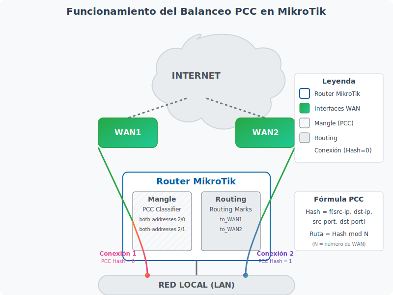

<section id="balanceo-pcc" class="mb-5">
    <div class="card">
        <div class="card-header bg-primary text-white">
            <h2 class="h4 mb-0">5. Balanceo de Carga con PCC (Per Connection Classifier)</h2>
        </div>
        <div class="card-body">
            <div id="pcc-teoria">
                <h3>5.1 Teoría y funcionamiento</h3>
                <p>El método PCC (Per Connection Classifier) es una de las técnicas más populares y efectivas para implementar balanceo de carga en routers MikroTik. A diferencia de otros métodos, PCC permite distribuir el tráfico entre múltiples conexiones a Internet manteniendo la integridad de las sesiones.</p>
                
                <div class="note">
                    <strong>¿Qué es PCC?</strong> PCC es un método que clasifica los paquetes basándose en información de la conexión como direcciones IP de origen/destino y puertos. Esto permite que todos los paquetes de una misma conexión sigan la misma ruta, evitando problemas con aplicaciones sensibles a cambios de IP.
                </div>
                
                <p><strong>Ventajas del balanceo PCC:</strong></p>
                <ul>
                    <li>Mantiene la integridad de las conexiones (todos los paquetes de una misma conexión siguen la misma ruta)</li>
                    <li>Permite distribución personalizada del tráfico (no necesariamente 50/50)</li>
                    <li>Compatible con NAT y firewall</li>
                    <li>Funciona bien con aplicaciones sensibles como VPNs, juegos en línea y streaming</li>
                    <li>Permite implementar políticas de enrutamiento basadas en tipo de tráfico</li>
                </ul>
                
                <p><strong>Funcionamiento del PCC:</strong></p>
                <p>El balanceo PCC utiliza dos componentes principales de RouterOS:</p>
                <ol>
                    <li><strong>Mangle</strong>: Para marcar los paquetes según su origen/destino</li>
                    <li><strong>Routing</strong>: Para enrutar los paquetes marcados a través de diferentes gateways</li>
                </ol>
                
                <p>El algoritmo PCC divide las conexiones utilizando operaciones matemáticas (módulo y división) sobre los valores hash de las direcciones IP y puertos. Esto garantiza que todos los paquetes de una misma conexión obtengan la misma marca y, por lo tanto, sigan la misma ruta.</p>
                
                <div class="diagram-container">
                    
                    <p class="figure-caption">Figura 2: Funcionamiento del balanceo PCC en MikroTik</p>
                </div>
            </div>
            
            <div id="pcc-configuracion" class="mt-5">
                <h3>5.2 Configuración paso a paso</h3>
                <p>A continuación, se presenta una guía paso a paso para configurar el balanceo de carga PCC en un router MikroTik. Este ejemplo asume que tenemos dos conexiones a Internet (WAN1 y WAN2) y una red local (LAN).</p>
                
                <div class="warning">
                    <strong>Importante:</strong> Antes de comenzar, asegúrate de tener acceso al router a través de otro medio (como consola) en caso de que pierdas conectividad durante la configuración.
                </div>
                
                <h4 class="mt-4">Paso 1: Identificar y configurar las interfaces</h4>
                <p>Primero, identifica las interfaces que utilizarás para cada conexión:</p>
                
                <ul class="steps">
                    <li>
                        <strong>Identificar interfaces:</strong> Usa el siguiente comando para ver las interfaces disponibles:
                        <div class="command">/interface print</div>
                    </li>
                    <li>
                        <strong>Renombrar interfaces (opcional):</strong> Para mayor claridad, puedes renombrar las interfaces:
                        <div class="command">/interface set 0 name=WAN1
/interface set 1 name=WAN2
/interface set 2 name=LAN</div>
                    </li>
                </ul>
                
                <h4 class="mt-4">Paso 2: Configurar direcciones IP</h4>
                <p>Configura las direcciones IP para cada interfaz:</p>
                
                <div class="command"># Configurar WAN1 (ejemplo con DHCP)
/ip address add interface=WAN1 address=dhcp

# Configurar WAN2 (ejemplo con IP estática)
/ip address add interface=WAN2 address=192.168.2.2/24

# Configurar LAN
/ip address add interface=LAN address=192.168.0.1/24</div>
                
                <h4 class="mt-4">Paso 3: Configurar rutas por defecto</h4>
                <p>Añade rutas para cada conexión WAN:</p>
                
                <div class="command"># Ruta para WAN1
/ip route add dst-address=0.0.0.0/0 gateway=192.168.1.1 check-gateway=ping distance=1

# Ruta para WAN2
/ip route add dst-address=0.0.0.0/0 gateway=192.168.2.1 check-gateway=ping distance=2</div>
                
                <div class="note">
                    <strong>Nota:</strong> El parámetro <code>check-gateway=ping</code> permite que el router verifique si el gateway está disponible. El parámetro <code>distance</code> establece la prioridad de la ruta (valores más bajos tienen mayor prioridad).
                </div>
                
                <h4 class="mt-4">Paso 4: Configurar reglas de marcado (Mangle)</h4>
                <p>Configura las reglas de mangle para marcar las conexiones:</p>
                
                <div class="command"># Marcar conexiones que salen por WAN1
/ip firewall mangle add chain=prerouting action=mark-connection new-connection-mark=WAN1_conn passthrough=yes per-connection-classifier=both-addresses:2/0

# Marcar conexiones que salen por WAN2
/ip firewall mangle add chain=prerouting action=mark-connection new-connection-mark=WAN2_conn passthrough=yes per-connection-classifier=both-addresses:2/1

# Marcar paquetes basados en la marca de conexión para WAN1
/ip firewall mangle add chain=prerouting action=mark-routing connection-mark=WAN1_conn new-routing-mark=to_WAN1 passthrough=yes

# Marcar paquetes basados en la marca de conexión para WAN2
/ip firewall mangle add chain=prerouting action=mark-routing connection-mark=WAN2_conn new-routing-mark=to_WAN2 passthrough=yes</div>
                
                <p>Explicación de los parámetros:</p>
                <ul>
                    <li><strong>both-addresses:2/0</strong>: Divide las conexiones en 2 grupos (para 2 WANs) y asigna el grupo 0 a esta regla</li>
                    <li><strong>both-addresses:2/1</strong>: Asigna el grupo 1 a esta regla</li>
                    <li><strong>passthrough=yes</strong>: Permite que el paquete continúe siendo procesado por las siguientes reglas</li>
                </ul>
                
                <h4 class="mt-4">Paso 5: Configurar reglas de enrutamiento</h4>
                <p>Añade rutas para cada marca de enrutamiento:</p>
                
                <div class="command"># Ruta para paquetes marcados para WAN1
/ip route add dst-address=0.0.0.0/0 gateway=192.168.1.1 routing-mark=to_WAN1 check-gateway=ping

# Ruta para paquetes marcados para WAN2
/ip route add dst-address=0.0.0.0/0 gateway=192.168.2.1 routing-mark=to_WAN2 check-gateway=ping</div>
                
                <h4 class="mt-4">Paso 6: Configurar NAT para ambas interfaces WAN</h4>
                <p>Configura el enmascaramiento (NAT) para permitir que los clientes de la red local accedan a Internet a través de ambas conexiones:</p>
                
                <div class="command"># NAT para WAN1
/ip firewall nat add chain=srcnat out-interface=WAN1 action=masquerade

# NAT para WAN2
/ip firewall nat add chain=srcnat out-interface=WAN2 action=masquerade</div>
                
                <h4 class="mt-4">Paso 7: Configurar reglas de failover (opcional)</h4>
                <p>Para garantizar que el tráfico se redirija automáticamente si una de las conexiones falla:</p>
                
                <div class="command"># Marcar paquetes que no pueden salir por WAN1 para que usen WAN2
/ip firewall mangle add chain=output connection-mark=WAN1_conn action=mark-routing new-routing-mark=to_WAN2 passthrough=yes dst-address-type=!local

# Marcar paquetes que no pueden salir por WAN2 para que usen WAN1
/ip firewall mangle add chain=output connection-mark=WAN2_conn action=mark-routing new-routing-mark=to_WAN1 passthrough=yes dst-address-type=!local</div>
            </div>
            
            <div id="pcc-verificacion" class="mt-5">
                <h3>5.3 Verificación y pruebas</h3>
                <p>Una vez configurado el balanceo de carga, es importante verificar que funciona correctamente:</p>
                
                <h4>Verificar las conexiones activas</h4>
                <p>Para ver cómo se están distribuyendo las conexiones entre las dos WAN:</p>
                
                <div class="command">/ip firewall connection print</div>
                
                <h4>Verificar el uso de ancho de banda</h4>
                <p>Para monitorear el tráfico en cada interfaz WAN:</p>
                
                <div class="command">/interface monitor-traffic WAN1,WAN2</div>
                
                <h4>Prueba de failover</h4>
                <p>Para probar que el failover funciona correctamente, puedes desconectar temporalmente una de las interfaces WAN y verificar que el tráfico continúa fluyendo a través de la otra interfaz.</p>
                
                <div class="note">
                    <strong>Consejo:</strong> Utiliza herramientas como <code>ping</code> o <code>traceroute</code> desde dispositivos en la red local para verificar que las conexiones están utilizando diferentes rutas:
                    <div class="command">/ping 8.8.8.8 count=10
/tool traceroute 1.1.1.1</div>
                </div>
                
                <h4>Ajuste fino del balanceo</h4>
                <p>Si necesitas ajustar la proporción del balanceo (por ejemplo, si una conexión tiene más ancho de banda que la otra), puedes modificar las reglas PCC:</p>
                
                <div class="command"># Ejemplo para balanceo 70/30 (3 partes, 2 para WAN1 y 1 para WAN2)
# Primero elimina las reglas anteriores
/ip firewall mangle remove [find where comment="PCC Balancing"]

# Luego añade las nuevas reglas
/ip firewall mangle add chain=prerouting action=mark-connection new-connection-mark=WAN1_conn passthrough=yes per-connection-classifier=both-addresses:3/0 comment="PCC Balancing"
/ip firewall mangle add chain=prerouting action=mark-connection new-connection-mark=WAN1_conn passthrough=yes per-connection-classifier=both-addresses:3/1 comment="PCC Balancing"
/ip firewall mangle add chain=prerouting action=mark-connection new-connection-mark=WAN2_conn passthrough=yes per-connection-classifier=both-addresses:3/2 comment="PCC Balancing"</div>
                
                <p>En este ejemplo, 2/3 del tráfico (aproximadamente 67%) irá por WAN1 y 1/3 (aproximadamente 33%) por WAN2.</p>
            </div>
        </div>
    </div>
</section>